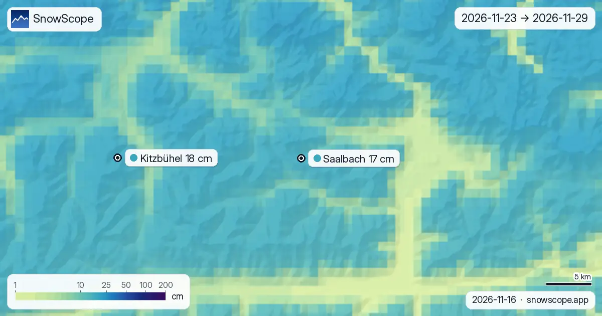

Saalbach snow forecast 23–29 November 2026: a useful 17 cm on the upper runs
Next week's snow numbers for Saalbach: 17 cm at the top, 17 cm at mid-mountain, 8 cm at the base, all as the middle of a range for 23–29 November. The top's range runs from 3 to 31 cm, which says as much as the middle value does.
See the live snow forecast for Saalbach in the SnowScope appSnow depth, powder alerts and the 3D map, free.

What 17–20 November leaves behind
This week gives little here: 10 cm at the top from 17 to 20 November and almost nothing (0 cm) at the base. Next week is the bigger of the two for Saalbach, which is the reverse of the western Alps.
What falls where on the Saalbach slopes
Read from the top down: 17 cm near 1900 m, 17 cm near 1400 m, 8 cm near 900 m. The low-to-high spread is 3–31 cm at the top and 2–14 cm at the base.
Day by day, the upper mountain picks up most of it on Thursday 26 (3 cm, up to 5), Friday 27 (4 cm, up to 7) and Sunday 29 (6 cm, up to 13). Outside those days expect little more than flurries.
Picking your day in Saalbach
The snowiest day up top is Sunday 29 November, with 6 cm in the middle of our forecast (up to 13 cm). That is a fresh coat on the groomers, nothing more.
Go high: depth is safest on the Zwölferkogel, the Schattberg and Leogang's Asitz, and the best skiing should be on the north faces of the Zwölferkogel and the Schattberg. Treat Saalbach and Hinterglemm in the Glemm valley as the weak point.
Where the snow line sits
Half-and-half at the bottom: 8 cm near 900 m is a fair amount, but well short of the top's 17 cm. Mild spells will turn the lowest runs heavy and sticky.
The Skicircus is big but not high, so its early-season story is about cold more than height.
How sure is this?
Treat this one with caution: 3 cm at the low end, 31 cm at the high end. A spread that wide a week out means the storm may still slide away from Saalbach or sit right over it.
A forecast seven to thirteen days out is a trend, not a ticket.
Next door, the same week
At the top, next week, our forecast gives Kitzbühel (21 km away) 18 cm, Mayrhofen (70 km away) 17 cm and Hintertux (82 km away) 14 cm, against 17 cm here.
A few centimetres either way is inside the forecast's own margin, so Saalbach and its neighbours are effectively level.
Tips for skiers
- Before leaving the pistes in Saalbach, check the regional avalanche service of the province.
- Check the resort's own opening date and lift status: snow on the mountain does not mean lifts are running.
- Watch the forecast midweek: the top's range is 3–31 cm.
More maps (external sites)
About these numbers
Snow numbers: our two-week snow forecast issued on 16 November 2026, read at three heights of the resort (top, mid-mountain, base). Each total is the middle of a range, with a low and a high case. These are estimates for the slopes, not resort measurements, and forecasts move from day to day: check the live map before you go.
Cite this report
For research, teaching or the press: the numbers and charts are free to reuse under CC BY 4.0 with this citation.
SnowScope (2026), Saalbach snow forecast 23–29 November 2026: a useful 17 cm on the upper runs, https://snowscope.app/blog/en/2026/11/saalbach-snow-forecast-next-week-23-29-november-2026.html, accessed 2026-11-16
SnowScope (Atlas Labs). (2026, November 16). Saalbach snow forecast 23–29 November 2026: a useful 17 cm on the upper runs. SnowScope snow reports. https://snowscope.app/blog/en/2026/11/saalbach-snow-forecast-next-week-23-29-november-2026.html
BibTeX
@misc{snowscope2026saalbachsnowforecastnext,
author = {{SnowScope (Atlas Labs)}},
title = {Saalbach snow forecast 23–29 November 2026: a useful 17 cm on the upper runs},
year = {2026},
month = nov,
howpublished = {\url{https://snowscope.app/blog/en/2026/11/saalbach-snow-forecast-next-week-23-29-november-2026.html}},
note = {Published 2026-11-16 11:47 UTC; accessed 2026-11-16}
}· CC BY 4.0 · Methods, data and tools →
Saalbach: snow and temperature by height, this winter vs last (tools) →
Follow Saalbach
Free: a message when fresh snow is coming, and the forecast every morning.
More snow reports

Pila above Aosta pairs a flat 60.00 EUR day pass with reliable December snow on its upper slopes.

Orcières Merlette offers a high base at 1826 m and a 6-day pass from 227 EUR, making it a reliable choice for a December ski trip.

Obertauern December skiing: 43 cm on a typical 15 December at mid-mountain, and a 6-day pass of EUR 331 before Christmas. Snow history and prices.